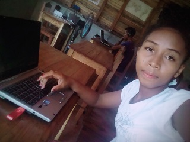

Hello everyone, My name is Sandy and I am from Madagascar. I am a nineteen year old girl just trying to be a web
developer. I am studying english and coding at an english school called
Onja
in oder to achieve my goal. In my
life I had some ups and downs but I am pleased that it is now going rather good. Because I have got the
opportunity to study at this lovely school, I have the hope that my future life will be good.
I was learning to communicate with many people from different places when I realized that being open minded is a
very useful attribute we should have if we want to improve in our life. So I love talking to people no matter where
they are from and sharing interesting things, that is why I am writing my blog. I believe mindfulness in the
workplace is the key of success especially for our country.
A photo of me

My family
I am a farmer's daughter from a little town called Antanandava. In my family, I am the oldest child among my
parents'childreen. I have two sisters and a brother who is the
youngest, they are all still studying. But I haven't been living with them for about a year because of my
study. Last December I had three
weeks of vacation, it was so nice playing and working together with them. I would suggest that it is always
good to have a break from your work and spend some time with your families and peers. So family is very
important as this proverb says:
Children are a poor man’s riches.
Which means a poor man finds wealth through his children, partially because they bring him joy, and also
because they are his legacy.
Thank you very much everyone for reading my presentation, if you are interested or want to talk to me, feel
free to email me to
Sandy